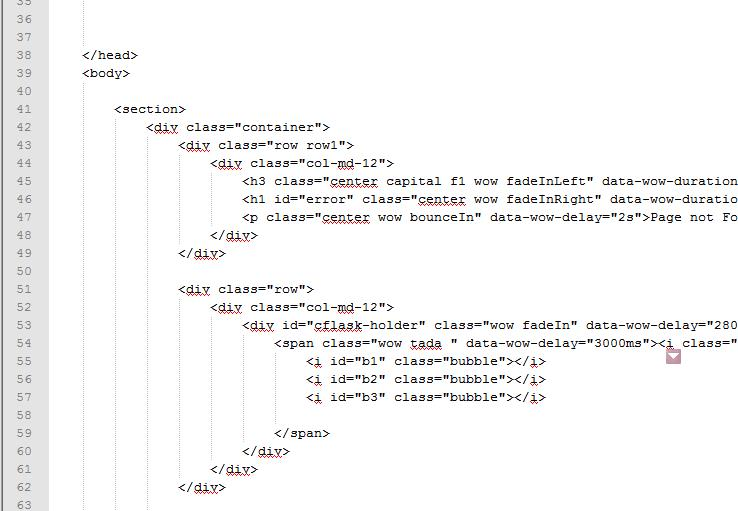
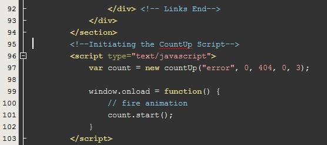
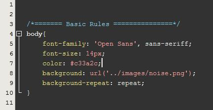
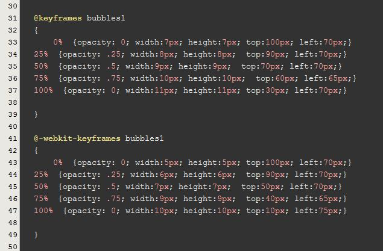

Thank you for purchasing Chemico. If you have any questions that are beyond the scope of this help file, please feel free to email via my user page contact form on my envato profile. Thanks so much!
Chemico is a Responsive Animated 404 Error Template.
The main content starts from a div with class "Container". Theres just one .html file used in this template " Index.html ". Attached a screen shot of the file where the main content starts(Line 42).

This is a 404 Error page, Lets say you want to make it a 403 Error page. The count up that goes to 404 should stop at 403. That also can be done in this index.html file.

On line 97 - we have a 404 which when changed to 403 stops the count up at "403". The "3" in the same line denotes the time taken in seconds to count up. That also can be altered.
The site consists of four css files which are :
Animate.css is the file thats responsible for the tranforms and transitions.
font-awesome.css is a prebuilt set of icon fonts. The Conical flask is generated with it.
custom.css is the stylesheet that contains all the custom styles.
To Change the font color :
Change "Color Value" in line 7

Also the bg Noise texture is applied here.

This is where the keyframes are animated for the bubbles from the conical Flask.
This theme imports three Javascript files.
CountUp.js is responsible for the counting up of the error number "404".
<script type="text/javascript">
var count = new countUp("error", 0, 404, 0, 3);
window.onload = function() {
// fire animation
count.start();
}
</script>
This is the script that initiates the Countup function. This can be found in the index.html file.
wow.js :
<script>
wow = new WOW(
{
animateClass: 'animated',
offset: 100
}
);
wow.init();
</script>
This initiates the wow function. Wow works hand in hand with animate.css file to give out stunning animations.
Thats all with the JS Files
In this template I have used the wow.js and countup.js scripts. I would like to provide creadits to the same.
Count Up : http://inorganik.github.io/countUp.js/
Wow.js : http://mynameismatthieu.com/WOW/
Once again, thank you so much for purchasing this theme. As I said at the beginning, I'd be glad to help you if you have any questions relating to this theme. I ll do my best to assist.
Thank you,
Zoox Studio